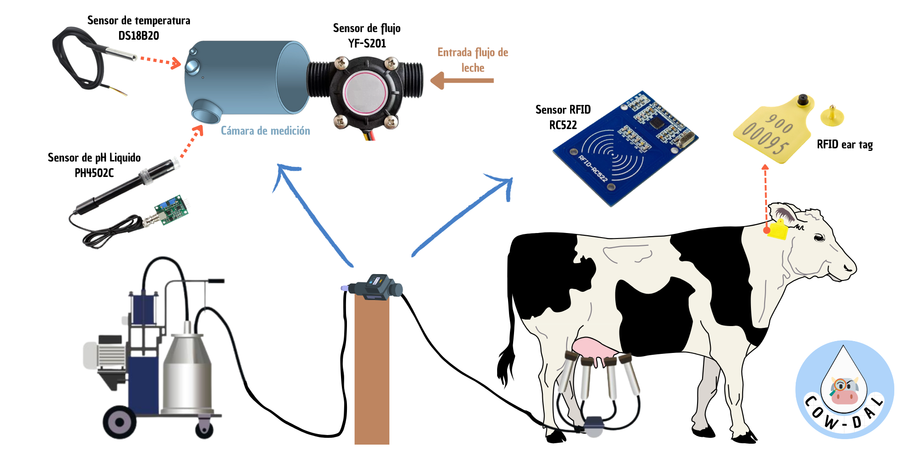
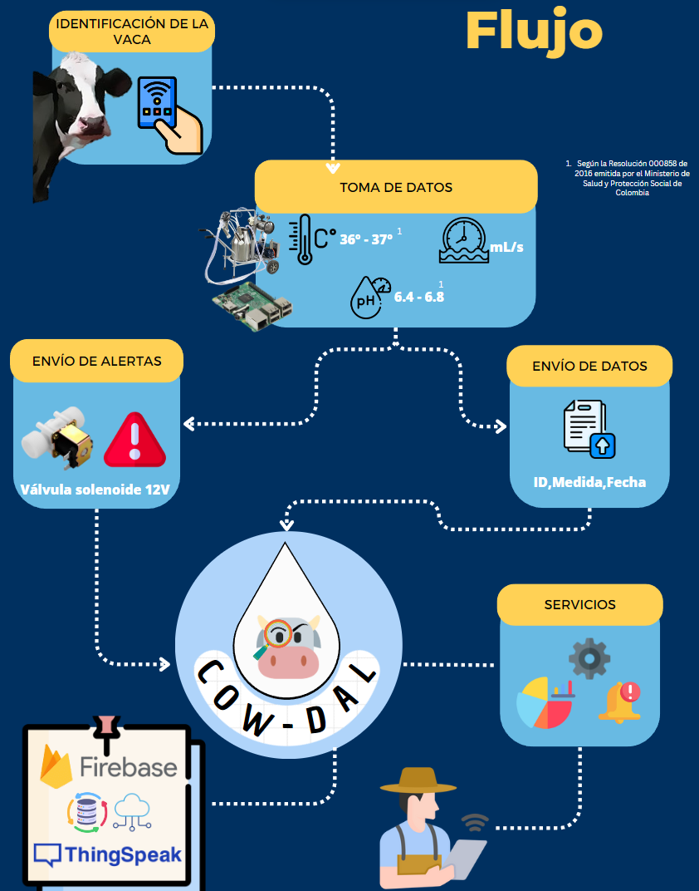

El ordeño mecánico ha ganado popularidad en Colombia en los últimos años debido a sus beneficios en eficiencia y productividad. Según el Ministerio de Agricultura y Desarrollo Rural, en Colombia hay cerca de 10.000 fincas que utilizan ordeño mecánico. Esto representa aproximadamente el 10% de las fincas lecheras en el país. La mayoría de estas fincas se encuentran en las regiones de Antioquia, Cundinamarca, Boyacá y Santander. Suele utilizarse en grandes explotaciones lecheras donde se ordeñan más vacas.
Sin embargo, al hacer uso de una máquina de ordeño puede ser difícil mantener un registro preciso de la cantidad de leche producida por cada vaca. Es importante conocer el desempeño individual de cada animal para evaluar su salud, identificar problemas de producción y tomar decisiones informadas sobre su cuidado y nutrición.
Por eso te presentamos...
COW - DAL
Una solución IoT que consta de un módulo de adquisición de datos (pH, temperatura, flujo promedio, volumen total) diseñado para acoplarse a las estaciones de ordeño mecánico existentes en el país, que junto con un sistema de identificación de las vacas (RFID) y software de análisis de datos permitirá ofrecerles a los campesinos lecheros de baja o mediana producción que hayan adquirido un sistema de ordeño mecánico, un método de visualizar de manera rápida y ordenada un glosario de cifras de valor sobre su producción, eficiencia y “calidad” actual e histórica con un enfoque global o un enfoque individual desde cualquier dispositivo con acceso a internet.

De esta forma vas a poder tener acceso inmediato a tu ganado, pues este ya no estará solamente en tu granja sino que también estará en la nube.
